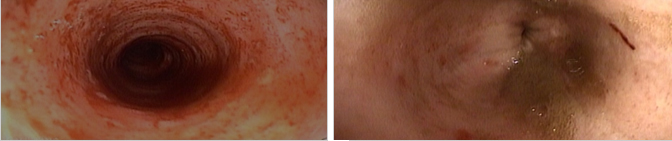
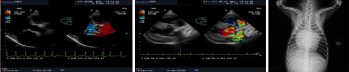
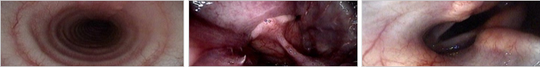
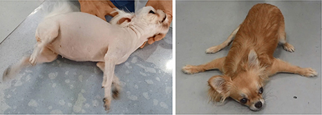
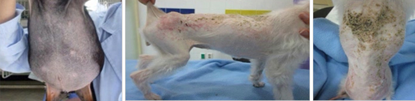

가족과 함께 평생을 함께하는 반려동물.
소중한만큼 건강을 챙겨주는 일도 최선을 다해야합니다
ANYPET ANIMAL HOSPITAL
가족과 함께 평생을 함께하는 반려동물.
소중한만큼 건강을 챙겨주는 일도 최선을 다해야합니다
ANYPET ANIMAL HOSPITAL
일반적인 소화기 질병에 대한 진단과 치료뿐만 아니라, 소화기 내시경 검사를 통해 식도, 위, 소장, 대장의 육안소견을 관찰하고 조직학적 검사를 시행하고 있습니다. 또한 내시경을 이용하여 종양, 이물, 식도 및 위장 출혈 등의 질병에 대하여 비침습적 치료를 시행하고 있습니다.
- 장기간 약물처방에도 불구하고 만성구토나 만성설사로 인해 고통 받는 경우
- 이물이 식도, 위에 존재하는 경우.
혈압측정, 심전도, 심초음파, 심혈관 조영술 등의 진단 방법을 이용하여, 고혈압, 부정맥, 심부전, 심장사상충 감염 및 기타 여러 심혈관계 질환을 진단하고 내과적 약물 치료를 실시하고 있습니다.
진단영상의학 및 진단검사의학과 연계하여 일반적인 호흡기 질병에 대한 진단과 치료를 실시하고 있습니다. 호흡기 질병의 정확한 진단과 적절한 치료를 위해 기관지 내시경 검사 및 기관지 폐포 세척 검사를 통해 원인 세균의 분리 동정과 항생제 감수성 검사, 세포학적 검사를 실시하고 있습니다.
뇌, 척수, 말초신경에 발생하는 질병에 대한 진단 및 치료를 담당하고 있습니다. 신경외과, 영상의학과(CT, MRI), 핵의학과(PET-CT), 진단검사의학과(뇌척수액검사)와의 협력진료 체계를 통해 포괄적 진료와 최첨단 진료 및 치료를 제공하고 있습니다.
내분비 내과에서는 진성 당뇨병, 부신 질병, 갑상샘 질병, 부갑상샘 질병, 뇌하수체 질병, 각종 대사 이상 질병 등을 진단영상의학적 평가와 혈액 검사 및 호르몬 검사를 통해 진단하고 치료하고 있습니다.
혈액 관련 질병, 면역 매개성 질병 및 종양 등에 대하여 진단영상의학 및 진단검사의학과 연계하여 진단 및 치료를 실시하고 있습니다. 또한 특정 악성 종양에 있어서는 항암치료를 실시하며 외과와의 협진을 통해 최고의 치료율과 예후를 나타내도록 노력하고 있습니다.
자가 면역성 질병을 진단하기 위해 자기항체 검사 및 LE세포 검사를 실시하며, 유세포 분석기를 이용하여 여러 면역성 질병 등을 진단하고 있다. 그리고 면역저하 동물에 있어서 면역부활제에 대한 연구를 토대로 치료에 응용하고 있다.
신장 질병에 대해 진단영상검사 및 혈액검사, 혈액화학적 검사, 요검사 등을 통해 진단하고 있으며, 다양한 약물요법으로 내과적인 치료를 실시하고 있습니다. 특히 마취나 입원 없이 사구체 여과율을 정확히 평가하여 만성신장질병을 조기에 진단하고 치료하고 있습니다.
Copyrights (C) 2020 Veterinary Medical Teaching Hospital. Anypet Animal Hospital All Rights Reserved.
979-742 . 경기도 용인시 수지구 만현로 9 애니펫동물병원 tel . 031-265-8661 FAX . 031-256-8662 EMAIL . anypet@suy.ac.kr